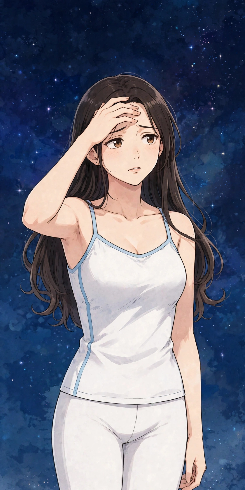

江坂で季節の変わり目の不調ケア疲れ・だるさ

春先や秋口、梅雨どきになると、決まって眠りが浅くなったり体が重くなったりする。吹田・豊中の住宅地で暮らす方にも多い、変わり目特有のリズムの乱れについてまとめます。
東洋医学から見た考え方
季節の移り変わりでは気温や湿度、日照時間が大きく動き、体温や眠りを調整する自律神経に負担がかかります。東洋医学では、季節ごとに体へ影響する寒さ・湿気・乾燥などが異なると考え、その時期に合わせた服装や食事、休息の取り方を養生として大切にします。
関係する部位の目安は、図1のとおりです。
図1｜季節の変わり目に重くなりやすい全身（正面）

当店でのケア
おすすめ：オイルマッサージ＋美容整体
当店では、変わり目で弱りがちな巡りを全身のケアで整え、その日の体調に合わせて圧やペースを調整しながら進めます。江坂で仕事帰りに立ち寄れる夜の時間帯（17:00〜22:00）に、変わり目を乗り切る体づくりの一環としてご利用いただけます。
当店の施術は、気になる部分だけをなでるのではなく、つながりのある部位まで含めて深い圧でほぐし、巡りを促しながら整えていくのが持ち味です。施術のあとに「体が軽い」「すっきりした」と感じていただける状態を目指して、90分を組み立てます。
ご自宅でのセルフケア
変わり目は予定を詰めすぎず、休息を多めに取ることが基本です。朝晩の気温差に合わせて脱ぎ着できる服装を選び、旬の食材を食事に取り入れましょう。眠る時刻を一定に保つことも、リズムを崩さない助けになります。
セルフケアで意識したい場所と動きは、図2のとおりです。
図2｜変わり目の時期のセルフケア（正面）
キーワード：季節の変わり目不調感寒暖差体の重さ
季節の変わり目の不調のケアは90分 10,000円（税込）。ご予約はLINE公式アカウントで受け付けています。
専門解説で詳しく見る
「季節の変わり目の不調」の背景にある体の仕組みは、専門解説シリーズで図解とともに解説しています。あわせて読むことで、ケアの考え方が深まります。